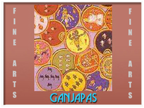
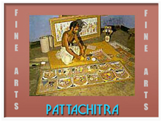
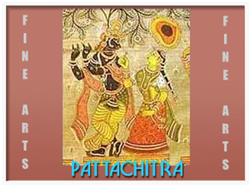
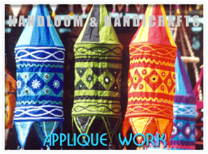
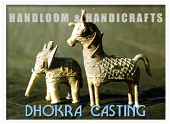

History Of Odisha
Temples & Monuments
Wildlife
Heritage Odisha
Art & Craft
Tourist Spots
PAINTING
Painting, according to some scholars is as old as Odisha's (Formerly Orissa) sculpture. In fact profession-wise, there was originally no distinction between painting and sculpture. The Chitrakars or artists were commissioned by their patrons in all visual arts of their times. To some extent the ancient wall plasters inside the Jagannath temple complex and in the temple of Mukteshwara seem to bear out this view. Hence the three main categories of Orissan painting, the Bhitichitra or the murals, the pata or the cloth painting and the Talpatachitra or the palm leaf engraving remain more or less the same in style and subject-matter during any given period of Orissan history.
  
The colours of all Orissan Paintings are vivid and contrasting, with red, ochre, indigo, green, black and white being used traditionally. Each outline is clearly and strongly defined. The paintings concentrate on sculpture like figures of simple shapes and monotonous postures and expression. There is no perspective or background detail, the background is generally either just painted in a contrasting colour or filled in with flowers and tendrils.ETCHING
Etching and painting on palm leaf is one of the most ancient craft forms not only in Odisha (Formerly Orissa) but also in the whole country. The birth of this art form, marks the beginning of the dissemination of written words and is therefore, closely intertwined with the literary traditions of the country. While palm-leaf inscriptions and paintings are available in several states of India, it is in Odisha (Formerly Orissa) that the craft reached perfection and great excellence. The numerous illustrated manuscripts in the collection of the Odisha (Formerly Orissa) State Museum embody the rich artistic traditions of the State. This tradition continues even to-day and thrives among the handicrafts artisans of the State particularly in the districts of Puri and Cuttack.
HANDICRAFTS & HANDLOOMS
Applique Work
'Applique', which is a French term, is a technique by which the decorative effect is obtained by superposing patches of coloured fabrics on a basic fabric, the edges of the patches being sewn in some form of stitchery. It is distinct from what is known as patch work in which small pieces of cut fabrics are usually joined side by side to make a large piece of fabric or for repairing a damaged fabric. Though the form is not unknown in other parts of India, it is Odisha (Formerly Orissa) and specially in Pipli that the craft has a living and active tradition continuing over centuries. While the largest number of applique craftsmen are concentrated in Pipli, there are quite a few in Puri and very small numbers in Khallikote, Parlakhemundi and Boudh areas also.
 
Brass & Bell MetalMetal craft is perhaps the single most important craft in terms of the number of artisans engaged in its practice as in its close links with the daily lives of the people of the State. The craft is practiced by the people of the Kansari caste who can be broadly described as metalsmiths while a particular variety, dhokra, is practiced mainly by sithulias. The largest concentration of the former is Kantilo and Balakati in Puri district although fairly substantial numbers are found in Cuttack, Ganjam and Sambalpur districts.